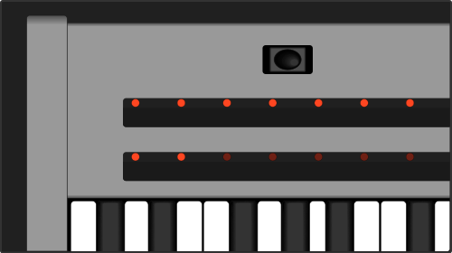

Bender & Ribbons
back to Overview
The two 800 mm ribbons (touch strips) are equipped with 33 LED dots.
They can be used as hardware modulation source in absolute or relative mode each combinable with return-to-center behavior.
The magnetic loaded bender can be used for pitchbending or as a modulation source.
Read how to assign a macro control to hardware sources here.